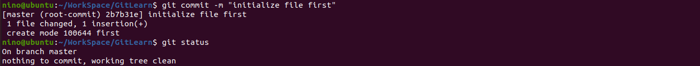
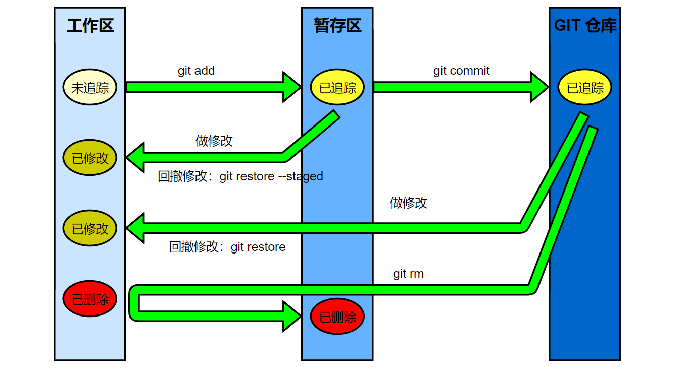
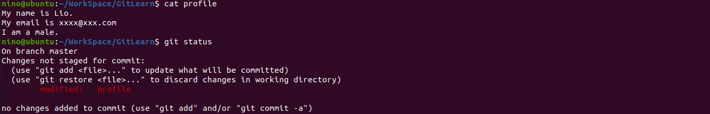
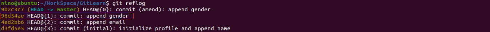
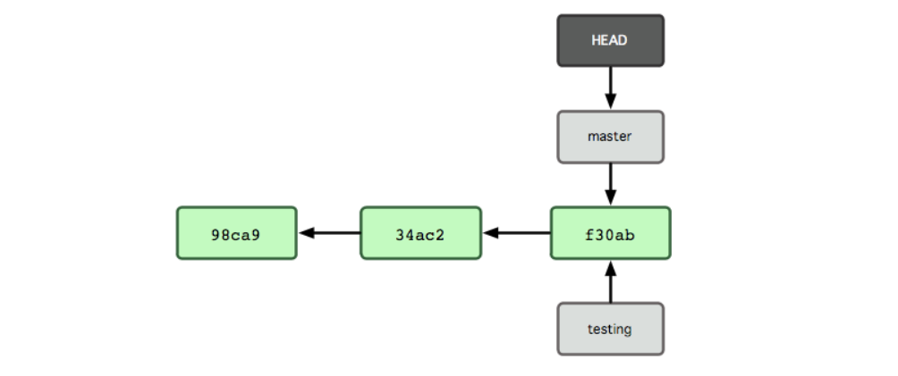

GIT 本地仓库基本使用
将项目初始化为 GIT 仓库
GIT 是一种项目版本管理工具，其本身可以相当于我们项目开发过程中的一种辅助性工具，为了使用这种工具我们首先需要将项目通过 GIT 提供的命令进行初始化。
要对现有的某个项目开始用 Git 管理，只需到此项目所在的目录，执行：
1 | git init |
执行这条命令后，在项目的当前目录下会出现一个名为 .git 的目录，所有 GIT 需要的数据和资源都存放在这个目录中。后续对 GIT 的各种操作，其实主要就是读写这个目录下的内容。
GIT 初体验
在将我们的项目初始化为一个 GIT 仓库后，我们就可以通过 GIT 对项目中的文件进行版本管理了。现在在我们的项目中创建第一个文件 first ：
通过 GIT 提供的查看仓库状态的命令 git status 可以查看创建这个文件后的仓库的状态：
可以发现 GIT 提示我们有一个未追踪的文件 first。这个所谓未追踪的意思就是我们刚刚创建的文件还没有被纳入到 GIT 的版本管理中，在 GIT 仓库中创建一个新的文件，新文件的状态是未追踪的；同时，GIT 将这个文件放在一种称为工作区的区域中。
为了将我们创建的文件纳入到 GIT 中进行管理，首先需要执行命令 git add <file name>。通过这个命令，GIT 会将指定的文件从工作区转换到一种称为暂存区的区域中，而这个命令也会将属于未追踪状态的文件转换为已追踪状态。操作如下：
通过 git add 命令，我们创建的 first 文件从工作区转移到了暂存区，同时其文件状态也从未追踪转换成已追踪。但此时提示我们有改变在等待提交，意思就是在我们的暂存区中放了新修改的内容，正在等待提交。
通过命令 git commit -m "some comments"，可以将暂存区中的文件正式提交到 GIT 仓库中，这个区域也是正式的记录下我们项目的版本的地方，我们只需要将其理解成一个快照即可。操作如下：

可以看到在提交之后，GIT 提示了我们 working tree clean，即所有的修改都加入到了新的快照中。
场景一：修改已经提交过的文件
假设我们现在需要对上述已经提交过的 first 文件进行修改，会发生什么呢，假设我们在其中第二行加上一句话 “the first modification!!!”。操作如下：
对于已追踪的文件 first ，在对其进行修改后，GIT 给出提示这个文件已经被修改了，这是文件从 GIT 仓库中又转移到了工作区，根据上述的实验可以知道，在工作区中的文件想要加入到 GIT 仓库中，首先需要通过 git add 命令将其转移到暂存区，再通过 git commit 命令将其提交到 GIT 仓库中。
假设这次修改我们发现是没有必要的，想要撤销这次的修改，只需要执行指令 git restore <file name> 即可。演示如下：
可以看到这次修改被丢弃了，刚刚加入到 first 中的那一行也被丢弃了。
[注]：对已经在 GIT 仓库中的文件进行修改，也会将文件从 GIT 仓库中转移到工作区，同时这个已追踪文件的文件状态会变成已修改（modifIed）。
场景二：修改暂存区中的文件
在工作的时候，有一部工作已经完成，这时候就可以将工作区的文件通过 git add 命令加入到暂存区暂存起来，然后等工作都完成后一起提交到 GIT 仓库。假设在后续的开发中，发现已经暂存的文件需要进行修改，这时候会发生什么呢？
以下示例我们创建一个新的文件 second ，加入到暂存区，然后对其进行修改，查看 GIT 状态如下：
可见，修改暂存区中的内容，会将已追踪的文件设置为已修改状态，然后通过 git status 看到有两个 second 的记录，如图所示，这两个 second 的记录不是同一个记录。假设此时我们用 git commit 来提交记录，则在 GIT 仓库中记录的是暂存区中包含一行的 second 文件记录。假设我们要撤销已修改状态的 second，同样只需要用上节的 git restore 命令，但是想要撤销上一次加入到暂存区中的 second，则需要加入选项 --staged，操作如下：
场景三：移除 GIT 仓库中的文件
假设我们不小心把某些没必要的文件也提交到了 GIT 仓库中，这时候应该怎么移除掉这种记录呢？当前的状态如下，仅有一个 first 文件，接下来移除 GIT 仓库对其的记录：
为了移除 first 文件，运行 git rm 命令，该命令会将 GIT 仓库中的 first 标识为已删除状态，并且转移到暂存区，而且也将工作目录中的 first 删除掉（git rm 相当于 rm 后再 git add）。
假设我们只想要移除掉 GIT 仓库中对文件的目录，而不想删除掉工作目录中的文件，应该怎么办呢？？只需要执行命令 git rm --cached 即可。
该命令会将 GIT 仓库中 first 记录移除，也就是将 first 标记为已删除状态，但是不会删掉工作目录中的 first 文件，所以还会多出一个未追踪的 first 。如下所示：
场景四：移动某个文件
不像其他的 VCS 系统，Git 并不跟踪文件移动操作。如果在 Git 中重命名了某个文件，仓库中存储的元数据并不会体现出这是一次改名操作，不过 Git 非常聪明，它会推断出究竟发生了什么。使用 git mv 命令就可以移动某个文件了，操作如下：
可见使用 git mv 命令，first 文件被删除了，然后创建了 first_name，并且已经将其放入到了暂存区。所以 git mv 命令相当于如下三条命令：
1 | mv first first_rename |
查看工作区、暂存区和 GIT 仓库的不同
使用命令 git status 只能看到当前的项目文件级别的变更记录，如果想看到文件内容的不同，则需要 git diff 命令。
git diff：查看工作区相对于暂存区的变化git diff --cached：查看 暂存区相当于 GIT 仓库的变化
假设在 GIT 仓库中已经有了一个 first 文件，其中仅有一行文本信息。当前整个项目文件夹的状态如下：
修改 first 文件，加入一行文本，查看状态如下：
可以看到，当使用 git diff 命令时，会将 first 文件中的信息打印出来，并且标示出工作区中当前 first 文件和暂存区中的区别；而使用 git diff --cached 没有打印出任何信息，这证明暂存区中的 first 文件和 GIT 仓库中的 first 文件是完全一样的。
通过 git add 命令将 first 文件保存到暂存区，然后查看不同：
这一次，工作区和暂存区相同了，而暂存区相对于 GIT 仓库有了变化。
总结
在 GIT 中有几个比较重要的概念，首先是文件所在的区域有三个，包括工作区、暂存区、GIT 仓库。然后是文件状态，未追踪（一般是新文件）、已追踪（显示或者隐式执行过 git add 的文件）、已修改（修改已追踪文件得到的状态）。通过下图可以很显然的展示出文件的变化过程：

GIT 仓库的版本回退
这一节主要讲
git reset命令来进行版本回退、git revert来撤销某次提交记录
GIT 作为版本管理工具，在每次提交的时候都会形成一个快照，那么怎么查看历史的提交记录呢？？对于历史的提交我们又可以做什么样的操作呢？？我们从一个例子说起。
假设有一个文件 profile 用来存放个人信息，为了更加方便的探索 GIT 提交记录，我们每次输入一行信息就提交一次，现在，我们分三次分别提交了姓名、邮箱和性别三条记录。profile 文件目前的状态如下：
通过 git log 命令，我们可以看到当前仓库的提交记录信息，总共有三次提交，对应了 profile 文件中的三行信息。
其实，GIT 会将每次提交用链表一样的结构保存起来，其中有个 HEAD 指针，总是指向当前分支的的当前记录结点。所以上述工程的提交记录树应该如下：
场景一：最近一次提交记录的修改
假设我们发现最近的一次提交中写的 I’m a boy. 显得很不正式，需要进行修改，于是我们将 profile 的最后一行修改，如下：

profile 文件变成了已修改状态，如果我们用普通的 git add 和 git commit -m 命令的话，会生成一个新的提交记录，但这不是我们希望的，我们希望修改最近的一次提交记录即可。此时只需要运行 git add 和 git commit --amend，则 GIT 会弹出编辑 commit 信息的窗口，提示你是否需要修改 commit 信息，在保存退出后则将最近一次的提交记录所修改。其实这个命令的原理也就是将暂存区中的文件覆盖 GIT 仓库中最近的一次提交，这个操作可以让我们在提交后发现 commit 信息写错了的情况下修改 commit 信息（不修改文件，直接 git commit --amend，再修改 commit 信息即可）。
可以看到，对 profile 进行修改提交后，还是只有三条提交记录。
[注]：假设在上面的操作后，我们发现修改后的也不对，需要回退到修改前的状态，可是，由于新的修改已经把之前的记录覆盖了，那么应该怎么做呢？
这时候可以先输入git reflog，这个命令可以查看之前对于 HEAD 指针的操作记录，从而定位到某次提交的 sha-1 值，然后通过git reset命令则可以将 HEAD 指针指到修改前的提交记录上。

可以看到我们重置了 HEAD 指针到修改前的提交记录。
场景二：版本回退
在上一小节中，我们已经体验过了使用 git reset 命令进行版本回退，其实 reset 就是重置的意思，所谓的版本回退就是将 HEAD 指针回退某一次提交记录。回到本节最开始的时候 profile 的状态：
git reset 命令有三个重要的选项
--mixed：默认情况，将暂存区和 GIT 仓库中的提交记录回退到某一个版本，不改变工作区内容。--soft：仅仅将 GIT 仓库中的提交记录回退到某一个版本，不改变工作区和暂存区的内容。--hard：谨慎使用，将工作区、暂存区和 GIT 仓库都回退到某一个版本，工作区中未提交的修改会丢失。由于该选项会丢失工作区中的内容，所以在使用前一定要很谨慎！！！
假设我们给 profile 文件加入了地址信息：
此时我们还没有提交地址这条记录，但是我们不想要性别这条记录了，希望回退一个版本，这时候需要用到命令 git reset。
假如使用 git reset --hard 命令，则将我们工作区中关于地址的记录给弄丢了，这显然不是我们愿意看到的，所以可以使用 --soft 或者 --mixed 选项，如下：
这时候，我们仅需要在工作区将 profile 中关于性别那一行删除，然后再继续后续提交即可。
上面使用了命令git reset --mixed HEAD^，其中HEAD^表示将 HEAD 指针向上移动一个版本，如果是上上个版本则用 HEAD^^，依次类推。若要回退的版本很多，则可以使用 HEAD~n 来代替，其中 n 是指回退 n 个版本。
场景三：撤销某次提交
在很多时候，我们并不需要把整个项目都往前回滚到一个时间点，而仅仅需要将以前某次的提交给它撤销了，这时候就要用到 git revert 命令，这个命令就相当于接着当前所有提交记录的一次提交，比如说上述我们希望把性别那次提交给撤销了，我们上小节是直接回滚到上一个版本来进行的，如果在性别那次提交后还有很多的提交记录，那么上述方法会丢弃所有这些记录。但是用 git revert 则可以对指定的某次提交进行撤销而不会发生上述情况，假设我们要撤销上面 profile 的最后一次提交：
可见，在 git revert 命令后，多了一个提交记录，这个提交记录就是将第三次提交撤销的提交记录。
GIT 分支管理
有人把 Git 的分支模型称为“必杀技特性”，而正是因为它，将 Git 从版本控制系统家族里区分出来。Git 有何特别之处呢？Git 的分支可谓是难以置信的轻量级，它的新建操作几乎可以在瞬间完成，并且在不同分支间切换起来也差不多一样快。
提交操作发生了什么？
首先要有一个概念，GIT 保存的不是各个文件之间的差异和变化量，而是通过压缩方式保存了一系列文件快照。其中每个文件的快照是一个称为 blob 的对象，而在提交后，这次提交的文件快照都用一个称为 tree 的对象（一个 tree 对象对应一个文件目录）索引，对应的提交也会用一个称为 commit 的对象来保存这次提交（包括指向 tree 对象的指针，本次提交的作者等相关附属信息，零个或多个指向该提交对象的父对象指针）。
假设在我们的工作目录中有三个文件，准备将他们暂存后提交。
1 | git add README test.rb LICENSE |
暂存操 git add 作会根据每个文件的内容计算校验和（sha-1算法），然后将这些校验和作为文件快照的名字保存到暂存区中（GIT 使用 blob 类型的对象存储这些快照）。当使用 git commit 新建一个提交对象前，GIT 会计算每一个子目录（本例子中就是根目录）的校验和，然后将这些目录保存为树（tree）对象。之后 Git 创建的提交对象，除了包含相关提交信息以外，还包含着指向这个树对象（项目根目录）的指针，如此它就可以在将来需要的时候，重现此次快照的内容了。现在，GIT 仓库中有五个对象：
- 三个表示文件快照内容的 blob 对象
- 一个记录着目录树内容及其中各个文件对应 blob 对象索引的 tree 对象
- 一个包含指向 tree 对象（根目录）的索引和其他提交信息元数据的 commit 对象
概念上看，仓库中各个对象保存的数据和关系看起来如图：
作些修改后再次提交，那么这次的提交对象会包含一个指向上次提交对象的指针（译注：即下图中的 parent 对象）。两次提交后，仓库历史会变成如下图所示：
分支的本质
GIT 中分支，其实本质上仅仅是个指向 commit 对象的可变指针。在初始化一个项目后进行第一次提交的时候，GIT 会使用 master 作为默认分支的名字，在若干次提交后，其实已经有了一个指向最后一次提交对象的 master 分支，它在每次提交的时候都会自动向前移动。
那么创建一个分支的时候会发生什么呢？其实很简单，创建一个新的分支指针。比如新建一个 testing 分支，可以使用 git branch 命令：
1 | git branch testing |
这会在当前 commit 对象上新建一个分支指针。
GIT 如何知道你在当前哪个分支上工作呢？其实也是通过一个指针，上述的 HEAD 指针，这是一个指向你正在工作中的本地分支的指针，该指针指向的分支指针则表示当前所在的分支。使用 git branch 可以查看分支信息，其中当前分支的前面会有一个 * 号。
在上述的例子中，仅仅是新建了分支还没有切换分支，所以其关系如下：

要切换到其他分支，可以使用 git checkout 命令。假设我们要切换到 testing 分支：
1 | git checkout testing |
这样在不同分支上的提交则将产生分叉，HEAD 指针随着分支一起向前移动。
分支合并
假设我们的 GIT 仓库状态如下图所示，在主分支基础上创建了两个分支，然后分别进行了开发。
如果，hotfix 分支目前已经完成了开发，这时候就需要将其合并到主分支，然后进行发布。使用 git merge <branch> 命令合并，该命令将 branch 合并到当前上：
1 | git checkout master # 先切换到 master 分支 |
注意到，合并时出现了 “Fast forward” 的提示。这是因为 master 分支所在的提交对象是要并入的 hotfix 分支的直接上游，GIT 只需要把 master 分支指针直接右移。换句话说，如果顺着一个分支走下去可以到达另一个分支的话，那么 Git 在合并两者时，只会简单地把指针右移，因为这种单线的历史分支不存在任何需要解决的分歧，所以这种合并过程可以称为快进（Fast forward）。 现在最新的修改已经在当前 master 分支所指向的提交对象中了。
这时候，hotfix 分支已经完成了自己的使命，可以删掉了。
首先我们可以使用 git branch --merged 来查看哪些分支已经被并入到了当前分支：
1 | git branch --merged |
一般来说，列表中没有 * 的分支都可以使用 git branch -d 将其删除，因为其所作的修改已经并入到了当前的分支中了：
1 | git branch -d hotfix |
同样，也可以用 git branch --no-merged 来查看未合并的工作：
1 | git branch --no-merged |
它会显示还未合并进来的分支。由于这些分支中还包含着尚未合并进来的工作成果，所以简单地用 git branch -d 删除该分支会提示错误，因为那样做会丢失数据：
1 | git branch -d iss53 |
假设现在 iss53 也完成了开发任务，需要合并到主分支上：
实际操作同前面合并 hotfix 分支差不多，只需回到 master 分支，运行 git merge 命令指定要合并进来的分支：
1 | git checkout master |
请注意，这次合并操作的底层实现，并不同于之前 hotfix 的并入方式。因为这次你的开发历史是从更早的地方开始分叉的。由于当前 master 分支所指向的提交对象（C4）并不是 iss53 分支的直接祖先，GIT 不得不进行一些额外处理。就此例而言，GIT会用两个分支的末端（C4 和 C5）以及它们的共同祖先（C2）进行一次简单的三方合并计算。如下图所示：
这次，GIT 没有简单地把分支指针右移，而是对三方合并后的结果重新做一个新的快照，并自动创建一个指向它的提交对象（C6），如下图。这个提交对象比较特殊，它有两个祖先（C4 和 C5）。
值得一提的是 GIT 可以自己裁决哪个共同祖先才是最佳合并基础；这和 CVS 或 Subversion（1.5 以后的版本）不同，它们需要开发者手工指定合并基础。所以此特性让 GIT 的合并操作比其他系统都要简单不少。
遇到冲突时的分支合并
有时候合并操作并不会如此顺利。如果在不同的分支中都修改了同一个文件的同一部分，GIT 就无法干净地把两者合到一起，这种问题只能由人来裁决。以上述合并 iss53 分支为例，如果你在处理分支 iss53 的时候，将得到类似下面的结果：
1 | git merge iss53 |
GIT 作了合并，但没有提交，它会停下来等你解决冲突。要看看哪些文件在合并时发生冲突，可以用 git status 查阅：
1 | git status |
任何包含未解决冲突的文件都会以未合并（unmerged） 的状态列出。GIT 会在有冲突的文件里加入标准的冲突解决标记，可以通过它们来手工定位并解决这些冲突。可以看到此文件包含类似下面这样的部分：
1 | <<<<<<< HEAD:index.html |
可以看到 ======= 隔开的上半部分，是 HEAD（即 master 分支，在运行 merge 命令时所切换到的分支）中的内容，下半部分是在 iss53 分支中的内容。解决冲突的办法无非是二者选其一或者由你亲自整合到一起。比如你可以通过把这段内容替换为下面这样来解决：
1 | <div id="footer"> |
这个解决方案各采纳了两个分支中的一部分内容，而且我还删除了 <<<<<<<，======= 和 >>>>>>> 这些行。在解决了所有文件里的所有冲突后，运行 git add 将把它们标记为已解决状态，实际上就是来一次快照保存到暂存区域。因为一旦暂存，就表示冲突已经解决。再运行一次 git status 来确认所有冲突都已解决：
1 | git status |
如果觉得满意了，则可以直接提交。
采用 rebase 来合并分支
把一个分支中的修改整合到另一个分支的办法有两种：merge 和 rebase。
假设当前的分支状态如下：
最容易合并分支的方法是 merge 命令，它会把两个分支最新的快照（C3 和 C4）以及二者最新的共同祖先（C2）进行三方合并，合并的结果是产生一个新的提交对象（C5）。如图：
而采用 rebase 的方式也可以进行分支合并，其实际上就是把在 C3 里产生的变化补丁在 C4 的基础上重新打一遍。有了 rebase 命令，就可以把在一个分支里提交的改变移到另一个分支里重放一遍。
在这个例子里，运行如下命令：
1 | git checkout experiment |
它的原理是回到两个分支最近的共同祖先，根据当前分支（也就是要进行 rebase 的分支 experiment）后续的历次提交对象（这里只有一个 C3），生成一系列文件补丁，然后以基底分支（也就是主干分支 master）最后一个提交对象（C4）为新的出发点，逐个应用之前准备好的补丁文件，最后会生成一个新的合并提交对象（C3’），从而改写 experiment 的提交历史，使它成为 master 分支的直接下游。
然后再回到 master，进行一次 fast forward 合并。
1 | git checkout master |
现在的 C3’ 对应的快照，其实和普通的三方合并，即上个例子中的 C5 对应的快照内容一模一样了。虽然最后整合得到的结果没有任何区别，但衍合能产生一个更为整洁的提交历史。如果视察一个 rebase 过的分支的历史记录，看起来会更清楚：仿佛所有修改都是在一根线上先后进行的，尽管实际上它们原本是同时并行发生的。
一般我们使用 rebase 的目的，是想要得到一个能在远程分支上干净应用的补丁 — 比如某些项目你不是维护者，但想帮点忙的话，最好用 rebase：先在自己的一个分支里进行开发，当准备向主项目提交补丁的时候，根据最新的 origin/master 进行一次 rebase 操作然后再提交，这样维护者就不需要做任何整合工作（实际上是把解决分支补丁同最新主干代码之间冲突的责任，化转为由提交补丁的人来解决），只需根据你提供的仓库地址作一次快进合并，或者直接采纳你提交的补丁。
请注意，合并结果中最后一次提交所指向的快照，无论是通过 rebase，还是 merge 合并，都会得到相同的快照内容，只不过提交历史不同罢了。rebase 是按照每行的修改次序重演一遍修改，而合并是把最终结果合在一起。
命令汇总
git init：初始化一个仓库git add <files>：将文件暂存，文件会被标记为已追踪状态git commit -m "comments"：提交暂存区中的记录git restore <file>：回撤工作区相对于 GIT 仓库 的修改git restore --staged <file>：回撤工作区相对于暂存区的修改git diff：查看工作区相对于暂存区的变化git diff --cached：查看 暂存区相当于 GIT 仓库的变化git rm <files>：删除某个文件及其记录（在工作目录中也删除了）git rm --cached <files>：删除某个文件在 GIT 仓库中的记录（不会删除工作目录中的文件）git mv <file_name> <file_rename>：移动（重命名）某个文件git log：查看 GIT 仓库的提交记录git reflog：查看 HEAD 指针的操作记录git reset [--mixed|--soft|--hard] [HEAD|sha-1]：版本回退，将 HEAD 指针重置到某个版本处git revert <commit>：撤销某次提交git branch <branch_name>：在当前的 commit 对象处创建一个分支指针git branch：查看分支信息git branch -d <branch_name>：删除某个分支git branch --merged：查看已经合并到当前分支中的分支git branch --no-merged：查看未合并到当前分支中的分支git checkout <branch_name>：切换到某个分支git checkout -b <branch_name>：创建并且切换到某个分支git merge <branch_name>：将 branch_name 合并到当前分支git rebase <branch_name>：将当前分支上的改动整合到 branch_name 所指向的分支上去，并基于 branch_name 所指向分支创建新的提交记录，将当前分支指向到该提交记录
参考资料：《Pro Git》